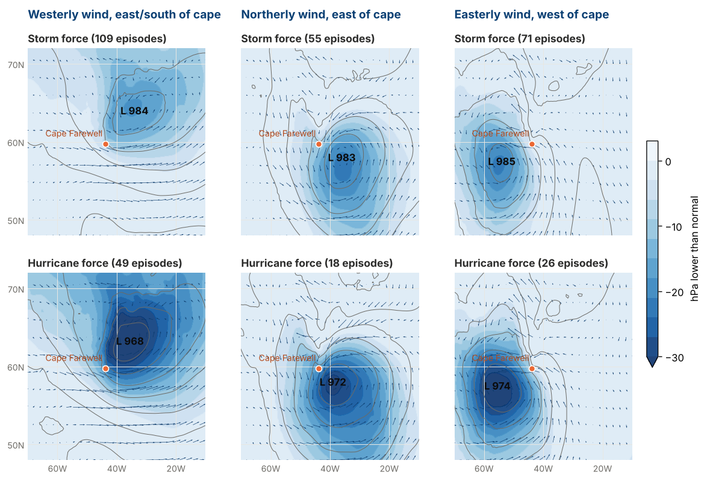

- About two thirds of tip-jet episodes (three quarters of hurricane-force ones) fall into one of three setups. Westerly wind east to south of the cape (the classic forward tip jet), northerly wind east of the cape, and easterly wind west of the cape ahead of a front. Each has a low in a different place (map below).
- About 3 in 10 tip-jet episodes reach hurricane force, whichever setup. The rest stay at storm force (gusts of 54–71 kt). The setup does not tell you which.
- A deeper low, and a tighter pressure gradient around the wind, go with hurricane force most clearly. Over winters 2004-05 to 2025-26, hurricane-force episodes had lows averaging about 955–961 hPa; storm-force ones about 970–973 hPa. That is how strong the storm already is, not an advance warning.
- Two extras depend on the setup. High pressure over the Greenland ice sheet goes with hurricane force in the northerly setup. In the westerly setup, colder air than sea upstream does.
- A blend of forecast models under-showed storm force in northerly (barrier) flow along the east coast in one winter. A satellite check from another project (one winter, not ours) found storm-force wind in about 2 in 10 of the cells where the blended forecast showed gale. See “Barrier flow: a satellite check” below.
- When this proxy says hurricane force, OPC usually had a hurricane-force low nearby (about 9 in 10 times, within 600 nm), against 2 to 5 in 10 for storm-force episodes.
Reading a tip jet forecast with this in mind
- Match the model to a setup. Where is the low and which way is the wind at the cape? Compare with the maps below.
- Expect storm-force gusts as the usual outcome and hurricane force as the stronger one in about 3 in 10.
- Lean toward hurricane force when the low is deeper (hurricane-force episodes averaged 955–961 hPa, storm-force ones 970–973), and, in a northerly setup, when pressure over the Greenland ice sheet is high.
- Treat all of it as a lead. It comes from reanalysis gusts, checked after the fact, and has not been tried on model forecasts.
Where the low sits for each setup
The columns are the three setups; the top row is storm-force episodes, the bottom row hurricane-force ones. Blue shading is how much lower the pressure is than normal, grey lines are sea-level pressure, arrows are the 10 m wind, the orange dot is Cape Farewell and L marks the lowest average pressure.

| Setup | Episodes | Reached hurricane force | Where the average low is (hurricane-force cases) |
|---|---|---|---|
| Westerly wind, east to south of the cape | 158 | 31% | about 63N 36W, northeast of the cape; westerlies run below it |
| Northerly wind, east of the cape | 73 | 25% | about 58N 39W, southeast of the cape |
| Easterly wind, west of the cape (ahead of a front) | 97 | 27% | about 57.5N 55.5W, in the Labrador Sea |
| None of these three | 186 | 18% | a mix: north of the cape in northerly wind (about a third), south of the cape in northerly or easterly wind (about 4 in 10), the rest west of it |
An episode is a run of 12-hourly times with a gust of 54 kt or more, treated as one event. 514 episodes in all, 126 reaching hurricane force.
What goes with the stronger gust
| Ingredient | Westerly | Northerly | Easterly |
|---|---|---|---|
| Deeper low (per about 13 hPa) | 5 times the odds | 2 times | 3 times |
| Higher pressure over the Greenland ice sheet (per about 10 hPa) | goes the other way (0.7 times) | 2 times | 2 times, but cannot tell |
| Colder air than sea upstream (per about 2.5 K) | 2 to 3 times | no detectable lean | no detectable lean |
| Low farther from the cape | cannot tell | ||
“Times the odds” compares hurricane-force with storm-force episodes for each step up in the ingredient. Differences smaller than about 2 times cannot be detected with this many episodes.
- Depth and the tight pressure gradient around the wind maximum describe the storm that is already blowing; they are not a lead-time signal.
- The Greenland high result in the northerly setup agrees in direction with the earlier Greenland jets study, whose coastal gusts were mostly this kind of flow. In the westerly setup the sign flips; why is untested, and the ice-sheet pressure may partly reflect the low sitting close by.
- The cold-air result appears only once the westerly setup is widened to include the forward tip jet east of the cape. Cold air is weakest in November, when hurricane force is also rarest, but it still holds with the month allowed for (about 3 times). Splitting the winters into even and odd years gives 3.8 times in one half and 1.7 in the other: the same direction, but uneven.
Where the models under-show storm force near Greenland
This section is not from our reanalysis study. It was reported by the marine wind (GFE) project and has not been recomputed here. It compares a blend of the GFS, ECMWF and AIFS forecasts with satellite (ASCAT) winds, for November to March 2025-26 only, forecasts 1 to 5 days ahead. It looks only at places where the blend forecast gale (34 kt or more), and asks how often the satellite saw storm force (48 kt or more) there. The setups are the same three as above, by wind direction near Cape Farewell. “Cold air” means the sea is at least 13 °C warmer than the air at about 5,000 ft (850 hPa).
| Setup | Air | Satellite saw storm force where the blend showed gale | Blend itself showed storm force |
|---|---|---|---|
| Northerly to north-easterly (barrier), east coast | not cold | about 2 in 10 (23%) | about 3 in 100 |
| Northerly to north-easterly (barrier), east coast | cold | about 2 in 10 (21%) | about 1 in 100 |
| Easterly (west of the tip, ahead of a front) | cold | about 2 in 10 (20%) | under 1 in 100 |
| Easterly (west of the tip, ahead of a front) | not cold | about 1 in 20 (5%) | about 1 in 100 |
| Westerly, east to south of the cape | cold | about 1 in 8 (13%) | about 1 in 100 |
| Westerly, east to south of the cape | not cold | about 1 in 6 (17%), small sample | under 1 in 100 |
| Open ocean, more than 800 km from the cape | cold | about 1 in 6 (16%) | about 2 in 100 |
| Open ocean, more than 800 km from the cape | not cold | about 1 in 10 (9%) | about 1 in 100 |
- Barrier flow is the clearest Greenland-specific signal. With or without cold air, about 1 in 5 gale cells reached storm force, and the blend almost never showed it. It matches the marine wind project's own finding that hurricane-force lows north of 60°N are mostly this kind of northerly flow along the east coast and the Denmark Strait.
- Cold air matters for easterly flow. Easterly wind reached storm force mainly in cold air (20% against 5%), which is consistent with cold air sitting east of the tip ahead of an approaching front (our reading, not tested). The westerly tip jet in cold air looked like an ordinary open-ocean cold outbreak.
- Cold air may explain only part of why so many hurricane-force lows are near Greenland. The terrain-forced barrier wind may be the bigger part; this is the reporting project's reading, not a measured share.
- Our own check of a barrier-strength measure came out as “cannot tell”. For the 73 northerly episodes (18 reaching hurricane force) we compared the pressure difference across the Denmark Strait (Iceland minus the Greenland east coast, a standard sign of how hard the flow along the coast is pushed). Each step of about 9 hPa in that difference went with about 1.1 times the odds of hurricane force, with a range of 0.7 to 1.7 once low depth is allowed for. With 18 events only effects of about 2 times or more could show up, so a modest link is not ruled out. This was done after the data were in (a lead at most), and low-level stability and upper-air patterns are still untested.
- Limits: one winter, with cases bunched within storms; the satellite has gaps next to the coast and the ice edge; the westerly samples are small. A “storm force possible” flag for northerly flow within about 300 km of the east coast is only an idea so far and has not been tested.
How often OPC had a hurricane-force low nearby
An OPC hurricane-force low fix within 600 nm of the gust maximum, within 12 hours: 92% (westerly), 94% (northerly) and 96% (easterly) of the hurricane-force episodes, against 24%, 36% and 54% of the storm-force ones. This goes through an OPC low (usually the parent low), not the tip jet itself, because the OPC archive holds low positions only.
What this does not tell you
- The pre-registered tests could not run (too few hurricane-force episodes to split the winters), so every comparison above is exploratory. The westerly setup was widened after the data were in, because the original definition left 122 forward tip jet episodes out.
- The gusts are reanalysis at 0.25 degrees next to steep terrain, the least certain place for this proxy. Not tested: low-level stability, upper-air patterns.
- Episodes in the same winter are not independent of each other, so the real sample is 22 winters, not 328 episodes; ranges come from resampling whole winters.
- No forecast model was tested, so this is not a forecast rule.
How this was done (for the curious)
Gusts come from ERA5, a reanalysis that blends observations with a model, at 0.25 degree spacing, twice a day, November to March, winters 2004-05 to 2025-26. The area is the ocean within about 216 nm (400 km) of Cape Farewell. An episode is a run of times with a gust of 54 kt or more, treated as one event; it is hurricane force if any time reaches 71.7 kt (the level the project matched to OPC’s hurricane-force counts). The setup comes from where the gust maximum sits relative to the cape and the wind direction there.
The odds compare hurricane-force with storm-force episodes for each step up in an ingredient, after allowing for how deep the low is, using all winters together; ranges come from resampling whole winters. The plan was written before the data were pulled, but its test (fit on half the winters, check on the other half) could not run because there were too few hurricane-force episodes, so the comparisons here were done afterwards. The westerly setup was widened after the data were in.